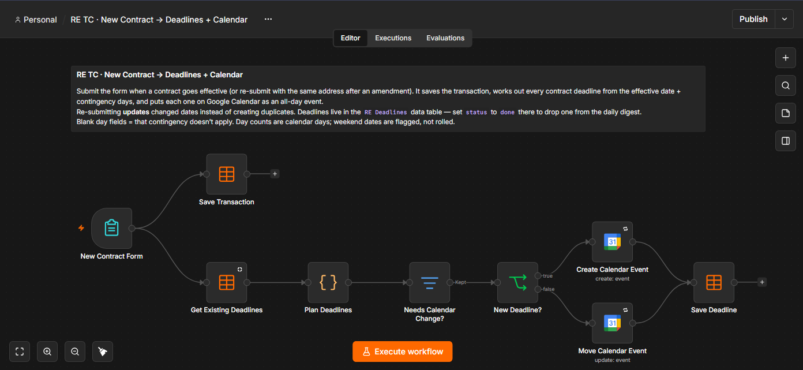

New contract → deadlines on your calendar
Starts whenYou submit the "New Contract" form
Takes from youAbout 2 minutes per contract
ResultEvery deadline as an all-day calendar event

- New Contract Form You enter the address, your side, the client, lender, title and other agent emails, the effective and closing dates, and the contingency days from the contract.
- Save Transaction The deal is stored in your transaction list.
- Plan Deadlines It calculates earnest money, option/inspection, appraisal and financing deadlines from the effective date, plus a lender clear-to-close check 5 days before closing, the final walkthrough the day before, and closing. Dates that land on a weekend are flagged so you can confirm them.
- Needs Calendar Change? / New Deadline? If you re-submit the same address after an amendment, it moves the existing events instead of creating duplicates.
- Create / Move Calendar Event → Save Deadline Each deadline goes on Google Calendar and into the deadline list that powers the morning email.
| Deadline from the test contract | Due | Who it involves |
|---|---|---|
| Earnest money | Wed Nov 4 | Title |
| Option / inspection period ends | Tue Nov 10 | Client (buyer side) |
| Appraisal contingency ends | Tue Nov 24 | Lender |
| Financing contingency ends | Tue Nov 24 | Lender |
| Lender clear-to-close check | Mon Nov 30 | Lender |
| Final walkthrough | Fri Dec 4 | Client |
| Closing · Saturday, flagged | Sat Dec 5 | Title |